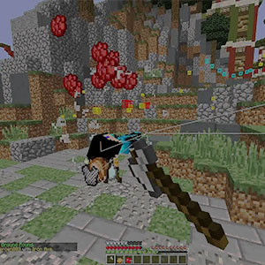

Luisy - самый лучший и новейший чит, у него есть конкуренты с читами "Jigsaw" и "Flux b15" Чит Luisy без которого не обойдётся ни один читер.
Интерфейс был сделан в разных темах, что теперь сразу не скажешь, что это недочит. И как всегда, на русский язык его не перевели, но удивляться тут
нечему, ведь разработчик не русскоязычный.
Функционал так же имеет очень болшое количества(около 500+ функций),а так же по-мимо функций читерства добавлены новые возможности, для улучшения
комфорта. К примеру, отныне, вы сможете сами выбирать анимацию своего меча.
Команды которые используют чаще всего:


AutoArmor — автоматически одевать броню.
AutoSoup — автоматом пьёт суп.
KillAura — быстро бьёт игроков на 360 градусов (может потребоваться настройка).
AutoPot — кидает зельки (только дающие положительный эффект).
FullBright — ВЕЧНОЕ ночное зрение.
NoWeather — отключает смену погоды в игре.
Tracers — обнаружение ближайших игроков.
FlyNCP — улучшенный Fly, который обходит анти-чит.
FastPlace — с помощью этой функции ваш персонаж гораздо быстрее ставит блоки.
InstantMine — ваш персонаж быстро ломает блоки.
BowAimbot — AimbotAura для лука.
AntiFire — защита от горения(огня).
FastBow — ускоренные выстрелы из лука.
AutoRespawn — авто-респавн.
Regen — быстрое восстановление жизни.
Phase — Пройти сквозь блоки.
Blink — Телепорт.
Trajecrories — Указывает падение стрелы из лука.
NoSeeEffects — убирает негативные эффекты.
AutoFish — автоматическая ловля рыбы.
ChestESP — эта функция показывает местоположение сундуков.
Criticals — постоянные критические удары.
Velosity — Анти-отдача (Антиотталкивание).
Long Jump — длинный прыжок.
phace — ходить по воде.
step — быстро забираться по блокам.
XRay — показывает все руды.
NameTags — увеличивает ники игроков.
FreeCam — Визуальный полёт (для поиска жертвы или чего-то еще)
Teleport — Телепорт для AAC илихайпиксель.
No Fall — Нет урона, если вы упадёте с большой высоты.
Меню:
Этот чит так раз таки и выделяется своим меню.
У этого чита нет меню в майнкрафте, меню содержится в программе.
Ведь это уже БОЛЬШОЙ плюс к анти-читу.
СКАЧАТЬ